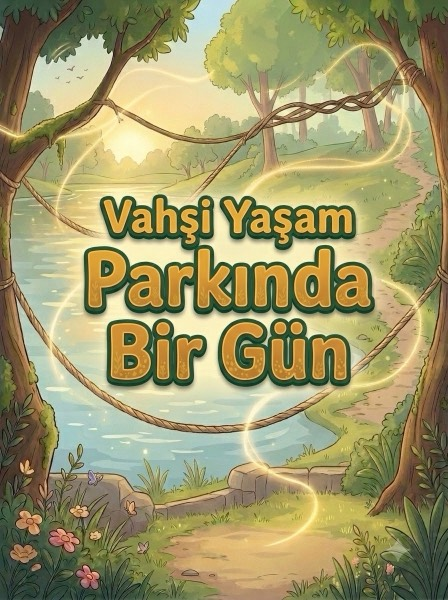

Emma zebraların yanına geldiğinde durdu. “Baba, bunların hepsi aynı mı?” diye sordu. Babası gülümsedi: “Yakından bak. Her zebranın çizgi deseni parmak izi gibi kendine özgüdür. İki zebra asla birbirinin aynısı olmaz.”
6
Start
00:42 / 01:55